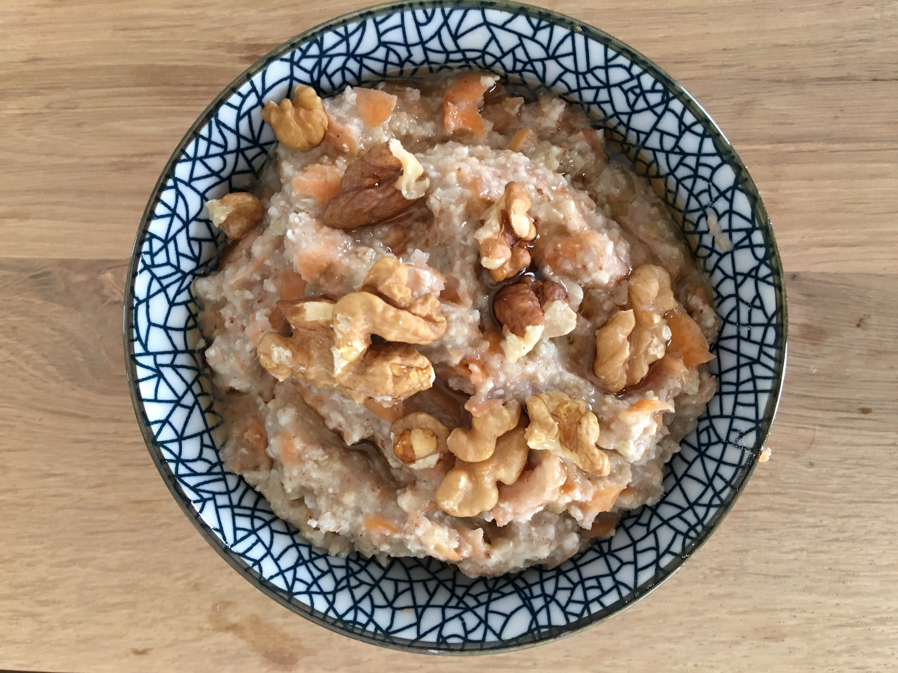

Warm Carrot-Buckwheat-Porridge
 On cold winter mornings, I’m often craving for a warm and hearty breakfast meal. For those mornings, porridge is the best! A few days ago I made myself a buckwheat porridge with carrots, walnuts and some tigernut powder – it was sooo delicious that I wanted to share it with you!
- 1 cup buckwheat
- 2 cups almond milk
- 2 tbsp tigernut powder
- 1 carrot
- Walnuts
- 1-2 tbsp maple syrup
Grate the carrot, then take a pot. Add milk, carrot, tigernut powder and buckwheat, slowly heat it sup. Cook it until it’s creamy. Put the porridge in a breakfast bowl, add walnuts and some maple syrup.>